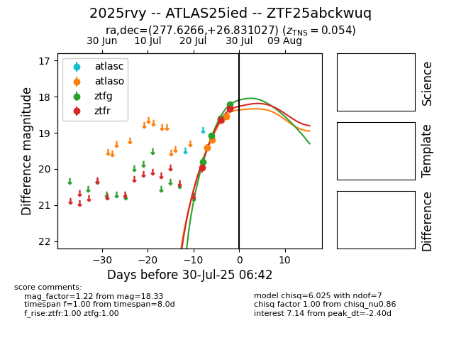

Target 2025rvy at 2025-07-30 06:42, see:
FINK: fink-portal.org/2025rvy
Lasair: lasair-ztf.lsst.ac.uk/objects/2025rvy
ALeRCE: alerce.online/object/2025rvy
TNS: wis-tns.org/object/2025rvy
YSE: ziggy.ucolick.org/yse/transient_detail/2025rvy
alt names
ZTF25abckwuq (ztf,fink)
2025rvy (tns,yse)
ATLAS25ied (atlas)
coordinates:
equatorial (ra, dec) = (277.6266,+26.83103)
galactic (l, b) = (55.2399,+16.15550)
photometry
last atlaso=18.54, ztfg=18.22, ztfr=18.33
4 atlaso, 4 ztfg, 3 ztfr detections
